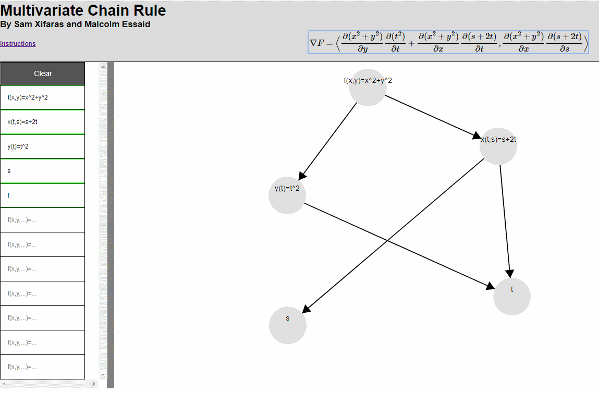

Introdution
The purpose of this web app is to help visualize the chain rule in more than one dimension. It allows the user to create a tree-like structure of dependencies between functions and the software displays the formula for calculating the partial derivatives.
The Interface
On the left, there is a table of text boxes where you can input your functions. The functions can take one of two forms: f([variables])=... or a single letter. The former is for indicating that a function depends on [variables], while the latter indicates that the variable notated by the single letter is independent.
As you type in the boxes, you will see circles appear on the canvas to the right. Click these circles to drag them to wherever you want, and right click to drag arrows to connect two circles. These arrows indicate the flow of dependency across the variables. When you complete a valid tree in the canvas, you will notice that the derivative is displayed in the header.
